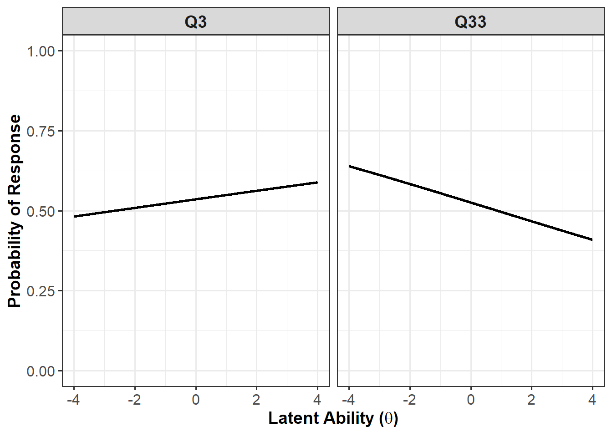
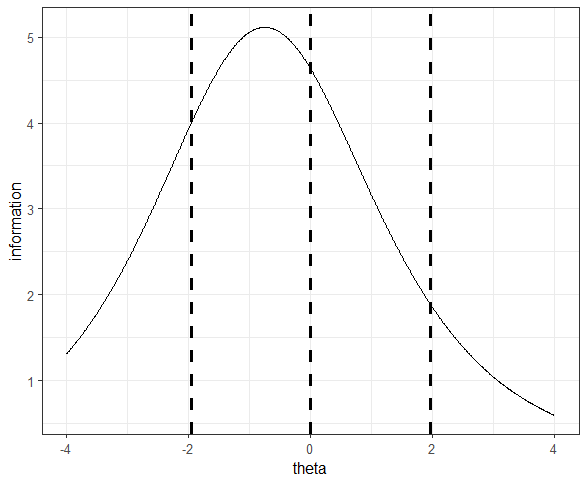
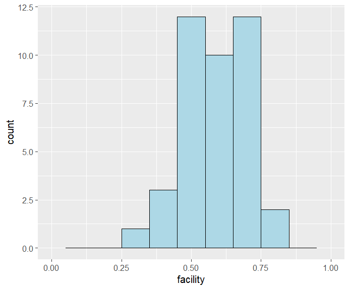

library(tidyverse) # for data wrangling
library(psych) # for omega/alpha
library(mirt) # for item response modellingPractical materials for Advanced Methods in Behavioural Research, Semester 2 (2025-2026), University of York.
1 Introduction
Learning objectives
As a reminder, the learning objectives for this week are:
- Explain the limitations of classical test theory and justify the use of item response theory
- Describe the structure and interpretation of the one- and two-parameter IRT models
- Interpret item difficulty, discrimination, and item characteristic curves in applied contexts
- Evaluate core IRT assumptions, including unidimensionality, monotonicity, and local independence
- Fit, compare, and interpret IRT models using the
mirtpackage in R, including assessment of model fit
In this week’s lecture we introduced Item Response Theory as a model-based alternative to Classical Test Theory. We discussed how IRT links item responses to an underlying latent trait, and how item difficulty and discrimination parameters shape the probability of endorsement or correct responding across levels of ability. We also considered the assumptions that underpin these models and how they influence interpretation.
In today’s practical, you will implement these ideas directly in R. You will fit and compare one- and two-parameter models using mirt, evaluate model fit and assumptions, and interpret item and test information. We will begin with multiple-choice exam data from the undergraduate B.Sc. Psychology module Brain and Behaviour, and then apply the same workflow to questionnaire data from the Taylor Manifest Anxiety Scale.
2 Setting up
2.1 Packages
Today’s practical will use the following packages. You will need to install each one, before loading them at the top of your script.
3 Part A: Core example
3.1 Introduction to the dataset
We will start with real exam data. Specifically, we will use student responses from a multiple-choice examination in the Brain and Behaviour module. This module is part of the undergraduate B.Sc. in Psychology at the University of York. The exam consisted of 40 questions, covering the two main topics taught in the module. The dataset is in wide format, with each row representing a single student and each column representing one question (Q1 to Q40) and whether or not they got the answer correct (1) or incorrect (0).
Let’s begin by loading the dataset into R. Note that this assumes you have downloaded the dataset from the VLE and saved it in the appropriate /data folder in your project directory.
brain <- read_csv("../data/ambr5_brain-and-behaviour.csv")3.1.1 Exploring the data
Before running any IRT models, you should explore the dataset to understand the responses and check for any possible issues.
Use your preferred R code to answer the following questions about the dataset:
- How many students took the exam?
- Are there any missing responses for each item?
- Does any student have one or more missing responses?
Show the code
# There are several ways you could do this, but here is one example...
# How many students took the exam?
nrow(brain) # 293 students
# Are there any missing responses:
# (a) per item?
colSums(is.na(brain)) # No missing responses per item
# (b) per student?
rowSums(is.na(brain)) # No missing responses per student3.2 Item Response Theory
Item Response Theory (IRT) takes a different approach to Classical Test Theory (CTT, see Appendix A: Classical Test Theory if you are interested in learning a little more). IRT models the probability of a correct response as a function of a latent trait, often denoted theta. In our case, theta represents the underlying ability of students in the Brain and Behaviour module.
To fit an IRT model, we will be using the mirt package. However, we need to ensure that the dataset is in the correct format for the package to run correctly. mirt expects a data frame in which each row corresponds to one individual and each column corresponds to one item. As this is dichotomous data, the values must be coded as either 0 (incorrect/no endorsement) or 1 (correct/endorsement). No additional variables should be included in the data object passed to mirt (e.g., participant IDs, gender, age). As such, we need to create a cleaned data frame that contains only the 40 MCQ responses.
# Keep only the item responses in the data frame
brain_items <- brain %>%
select(Q1:Q40)3.2.1 Unidimensionality
Before creating the IRT model, we should first check the assumption of unidimensionality; this means that a single latent trait accounts for the relationship among items. In practical terms, we are assuming that performance on all 40 questions is driven primarily by one underlying ability dimension. We can do a check of this using the omega function from the psych package.
omega_output <- omega(m = brain_items, # Data
poly = TRUE, # Specify tetrachoric correlation
plot = FALSE) # Do not produce plot
# Print hierarchical omega
cat("Hierarchical omega (ωh) is:", round(omega_output[["omega_h"]], 2), "\n")Hierarchical omega (ωh) is: 0.48 # Print explained common variance
cat("Explained common variance (ECV) is:", round(omega_output[["ECV"]], 2), "\n")Explained common variance (ECV) is: 0.4 When you run omega, the output gives many statistics, but for IRT we only need to focus on two: hierarchical omega (\(\mathsf{\omega}_h\)) and explained common variance (ECV).
In this analysis, \(\mathsf{\omega}_h\) is 0.48, which means that only 48% of the variance in the total score comes from a single general factor. The ECV is 0.40, which shows that 40% of the shared variance among items comes from the general factor, while the remaining 60% is attributable to group factors. Values above 0.70 are generally considered evidence of unidimensionality, though values above 0.50 are sometimes considered “essentially” unidimensional (Rodriguez, Reise, & Haviland, 2015). Strictly speaking, a unidimensional IRT model may not be ideal and a multidimensional IRT model may be better suited. However, for the purposes of this practical we will proceed with the unidimensional model!
3.2.2 Two-parameter (2PL) Modelling
We will begin with the two parameter logistic model (2PL). In this model, each item is characterised by two parameters: its discrimination (a) and difficulty (b). Items are allowed to differ in how strongly they relate to the latent trait.
3.2.2.1 Fitting the model
To fit the 2PL model we use the following code:
# Fit the model
model_2PL <- mirt(data = brain_items, # The item data
formula = "BB = Q1-Q40", # The model that will be fit
model = 1, # How many dimensions?
itemtype = "2PL", # Model type
SE = TRUE, # Compute SE's
verbose = FALSE) # No printing!
# Explore the model estimates
model_coef_2PL <- coef(object = model_2PL,
simplify = TRUE, # Keep only relevant information
IRTpars = TRUE) # Use a/b not a/dDiscrimination reflects how sharply the probability of a correct response increases as θ increases, while difficulty indicates where along θ a person has a 50% chance of answering correctly. Put the table of item statistics into a new variable by doing item_stats <- model_coef_2PL$items and take a look. If you sort the items by b, which is the easiest and which is the hardest? If you sort by a, which items discriminate most strongly?
3.2.2.2 Model Fit and Assumption Checks
At this stage, before examining person or item level diagnostics, it is appropriate to evaluate global model fit along with the three core assumptions of IRT: Unidimensionality, local independence and monotonicity. We already checked for unidimensionality, so we will just review local independence and monotonicity.
3.2.2.2.1 Global Model Fit
In mirt they have a function to obtain goodness of fit statistics for your model: M2(). This is recommended to ensure the model has fit the data well.
# Compute the fit statistics for the model
model_fit_2PL <- M2(model_2PL)
print(model_fit_2PL, digits = 2) M2 df p RMSEA RMSEA_5 RMSEA_95 SRMSR TLI CFI
stats 767 740 0.24 0.011 0 0.021 0.053 0.98 0.98The first value M2 is a limited information goodness of fit test. It addresses the question: Does this model adequately reproduce the observed item means and inter-item associations seen in the real data? A significant result suggests it does not. However, much like chi-square goodness of fit measures, significance is easy to achieve with large samples. As such, people tend to focus on other fit statistics: Root Mean Square Error of Approximation (RMSEA), Comparative Fit Index (CFI), and Tucker Lewis Index (TLI). People tend to interpret these in the same way for IRT and Structural Equation Modelling (SEM).
In our case, the M2 statistic was non-significant, χ²(740) = 766.79, p = .240. This indicates the model provides a relatively good fit for the data. Similarly, RMSEA was 0.01, CFI was 0.98 and the TLI was 0.98; these values all suggest good fit. As such, our model seems to be doing very well!
3.2.2.2.2 Local Independence
Local independence implies that any association between items should be fully explained by the latent trait (i.e., after conditioning on θ, there should be no residual association). To assess it, we can use the residuals functions from mirt.
# Compute the Yen (1984) Q3 statistic
residuals_2PL <- residuals(model_2PL, type = "Q3")
# Put values into a long-format for easier reading
# Use as.data.frame() as residuals_2PL is a matrix and we need to keep row names
residuals_long <- as.data.frame(residuals_2PL) %>%
# Make sure each row represents the first item in the pair
rownames_to_column(var = "item1") %>%
# Make the data frame go to longer format
pivot_longer(
# Put everything except the new column (item1) into long format
cols = -item1,
# The extra column is the second item in the pair
names_to = "item2",
# The value is the Q3 statistic
values_to = "Q3"
) %>%
# The values are symmetric in the matrix, so keep only upper triangle!
filter(item1 < item2)We specifically asked for the Q3 (Yen, 1984) statistic. Q3 is the residual correlation between pairs of items after conditioning on the estimated latent trait. It indicates whether two items remain associated beyond what the IRT model explains: values close to zero support local independence, positive values suggest excess association, and negative values reflect less association than expected under the model. There is no universal cut-off for Q3, although values above about 0.20 are often used as flags. A really great discussion on local dependence and how to assess it can be found in Christensen et al. (2017).
Use your preferred R code to address the following question: Are any of the Q3 statistics ≥ .20? Ensure you take the absolute value when checking for this!
Show the code
flagged_items <- residuals_long %>%
# Identify any problematic item pairs
filter(abs(Q3) > 0.20)If one or more item pairs show large residual associations, this suggests a possible violation of local independence, but it does not automatically require item removal. First, you should inspect the flagged items. Consider whether they share wording, content, or reflect a narrower sub-skill that could explain the residual association. Next, you should assess the practical impact. Temporarily remove one of the items and refit the model. If parameter estimates and overall fit change little, the dependence is likely minor. If estimates shift meaningfully, the violation may be substantively important. For the time being, let’s just move on!
3.2.2.2.3 Monotonicity
Monotonicity means that the probability of endorsing or correctly answering an item should increase as the latent trait increases. To assess monotonicity you can look at the item parameters we extracted earlier (item_stats). You should really be checking whether any discrimination (a) estimates are negative or close to zero. However, I often find it easier to look at item characteristic curves (ICC).
# Generate the item characteristic curve for all items
plot(model_2PL, type = "trace")If a curve decreases, this suggests a violation. Can you identify which questions may be problematic in this set?
Problematic items?

You should see that one item in particular is very problematic (Q33). The discrimination value for this item is -0.12. Because this value is negative, the item characteristic curve is non-monotonic, meaning higher ability is associated with a lower probability of answering correctly.
Of course, there are some items that tell us very little about the latent trait we are interested in. For example, Q3. For Q3, the item discrimination is 0.05. This value is close to zero, so the ICC is almost flat, meaning the item barely differentiates between low and high ability and provides little information about the latent trait.
If you find an item with non-monotonicity, the first step is to check for a scoring or coding error. Negative slopes are often caused by reverse coding or an incorrect answer key. If scoring is correct, inspect the item content to see whether it is ambiguous, misleading, or measuring a different skill than the rest of the test. In practice, items that remain non-monotonic after checking scoring are usually removed from the scale or rewritten for future use, because they undermine interpretation of the latent trait.
3.2.2.3 Item Fit
We have checked the global model fit and the assumptions of the model. However, even if the overall model fits well, individual items could still behave unexpectedly! To assess item fit, we can use the itemfit() function from mirt.
# Make dataframe of the person fit statistics
item_fit <- itemfit(model_2PL)If you view the item_fit statistics you just generated you will see many columns. The one to focus on is the RMSEA.S_X2 value. RMSEA.S_X2 gives you an idea of the magnitude of misfit per item and is (a little) less sensitive to sample size. The closer to 0 the value, the better the fit. You can treat these similar to the RMSEA values we discussed for global fit.
What about Q33?
We know that Q33 is non-monotonic, but it isn’t flagged by the item fit statistics. Why?
Well, it’s because you’re asking a different question. Remember, the S-X² statistic is interested in whether the observed response across ability groups matches the response curve generated by the model. It does not care if the slope is positive or negative, just whether the data fit with the models prediction. In this case, the data clearly follow the same pattern as the model (i.e., a negative association with the latent trait).
3.2.2.4 Total (Test) Information
We can also evaluate how well the entire test measures the latent trait. In IRT, this is done using the concept of total (test) information. Total information describes how precisely the test estimates ability at different levels of θ. More information means more precision and smaller standard errors. Less information means greater uncertainty in ability estimates. In mirt, test information can be obtained using:
# Create a sequence of theta values from -4 to 4 (must be a matrix for mirt)
theta <- matrix(seq(-4, 4, by = 0.01), ncol = 1)
# Compute the test information at each specified theta value
test_info <- testinfo(model_2PL, Theta = theta)Use your preferred R code to answer the following questions:
- At what θ value does the test provide the most information?
- Can you generate a test information curve where ability is on the x-axis and the test information is on the y-axis? Compare information at:
- θ = −1.96,
- θ = 0, and
- θ = +1.96
- What does this tell you about this test?
Show the code
# There are several ways you could do this, but here is one example...
# Generate a tibble of the theta and test information values
test_info_df <- tibble(
theta = as.vector(theta),
information = as.vector(test_info))
# Where do we get the most information?
test_info_df %>%
slice_max(information, n = 1) # θ = -0.75, Information = 5.11
# Let's look at the plot
ggplot(data = test_info_df,
mapping = aes(x = theta,
y = information)) +
geom_line() +
geom_vline(xintercept = c(-1.96,0,1.96),
linetype = "dashed",
linewidth = 1) +
theme_bw()
# Look at the three ability values, what information do we get?
test_info_df %>%
filter(theta %in% c(-1.96,0,1.96))
# Keep in mind the maximum information was 5.11.
# At θ = -1.96, information = 5.06, which is about 78% of the maximum.
# At θ = 0, information = 4.63, which is about 91% of the maximum.
# At θ = 1.96, information = 3.16, which is about 37% of the maximum.
# This shows that the test is most precise for slightly below-average
# and average ability respondents, but precision declines towards higher
# ability levels
The total information curve shows: θ on the x-axis and information on the y-axis. High points on the curve indicate regions where the test is most precise. Low points indicate regions where ability estimates are less precise. In our example, our test appears to be suited for individuals with slightly lower-to-average abilities. However, we do see it still gives us some information about higher ability students.
3.2.3 One-parameter (1PL, Rasch) Modelling
Let’s quickly recompute the model as a 1PL fit (i.e., only item difficulty (b) varies).
# Fit a 1PL (Rasch) model
model_1PL <- mirt(
data = brain_items,
model = 1,
itemtype = "1PL",
SE = TRUE,
verbose = FALSE
)You can look at the coefficients as we did before, what do you notice? One thing that should be obvious is that discrimination (a) is now fixed to a value of 1, but difficulty (b) varies. In other words, the model assumes that all items are equally sensitive to ability and differ only in their level of difficulty. Though a bold assumption, it is possible that this model provides a better overall fit to the data. You could also check all of the other aspects of the model as we did with the 2PL if you wished to.
3.2.3.1 Model Comparison
However, for the practical, let’s just have a quick look at which model provides the best overall fit. You can do this using this code:
model_comparison <- anova(model_1PL, model_2PL)
print(model_comparison, digits = 2) AIC SABIC HQ BIC logLik X2 df p
model_1PL 14864.15 14884.51 14923.11 15011.36 -7392.08
model_2PL 14730.65 14771.37 14848.57 15025.07 -7285.33 213.5 40 0Three out of four information criteria favour the 2PL model (remember - less is better!), suggesting that allowing item discriminations to vary provides a better balance between fit and complexity. BIC, which penalises additional parameters more strongly, favours the simpler 1PL model. Given most information criteria favour the 2PL, it is likely we should use the 2PL model to understand this test!
Take a break!
If you haven’t already taken a break today, we suggest you do so before you start the next section.

4 Part B: Apply your knowledge
4.1 Introduction to the dataset
We will be working with a dataset from Open Psychometrics containing 5,410 responses to the Taylor Manifest Anxiety Scale (TMA). As noted in the lecture, the TMA consists of 50 questionnaire items, each designed to measure anxiety. While all items aim to measure general anxiety, they target different dimensions of anxiety, including:
- Cognitive symptoms (e.g., Q11: “I worry quite a bit over possible misfortunes”)
- Physical symptoms (e.g., Q16: “I sweat very easily even on cool days”)
- Emotional responses (e.g., Q25: “I am easily embarrassed”)
The dataset is in wide format, meaning that each row represents a single participant. It includes the following variables:
score: the participant’s total score on the TMAage: the participant’s age in yearsgender: the participant’s self-reported gender, coded as:0 = None1 = Male2 = Female3 = Other
Q1 – Q50: the participant’s responses to the 50 questionnaire items, where each column corresponds to one item.
4.2 Downloading the dataset
The dataset is provided as a ZIP file on Open Psychometrics. Due to it being a ZIP file, we cannot load it directly into R. We first need to:
- Download the ZIP file.
- Unzip the contents.
- Rename the files to more informative names.
- … and then load the data into R.
This means there are a few additional data management steps before analysis! I will take you through that below.
# Step 1: Download the ZIP file into the data subfolder
download.file(
url = "http://openpsychometrics.org/_rawdata/TMA.zip",
destfile = "data/TMA.zip",
mode = "wb"
)
# Step 2: Unzip the downloaded file
unzip("data/TMA.zip", exdir = "data")
# Step 3: Rename the dataset so it is more informative
file.rename(
from = "data/TMA/data.csv",
to = "data/TMA/ambr5_TMA-data.csv"
)Now we can load the data in and make sure we are only working with relevant parts.
# Load in data
anxiety <- read_csv("../data/TMA/ambr5_TMA-data.csv") %>%
# Select only the items (remove age, score and gender)
select(Q1:Q50) %>%
# As noted in the codebook.txt file, answers are coded as:
# 1 = TRUE, 2 = FALSE, 0 = NOT ANSWERED.
# Need to fix this to be 1 = True, 0 = False and NA = Not answered
mutate(
# Recode all items Q1 to Q50
across(
Q1:Q50,
# 0 becomes NA, 2 becomes 0, and 1 stays as 1.
~ ifelse(. == 0, NA, ifelse(. == 2, 0, 1))
)
) %>%
# Let's remove rows containing NAs for ease
drop_na()Above, we loaded the TMA dataset and retained only the questionnaire items. Due to how the responses were originally coded, we needed to recode them to match the format required for our analyses. Specifically, we converted responses to a 1 (endorsed the item), 0 (did not endorse the item), and NA (did not respond to the item). After that, we used the drop_na function to remove any rows containing NA values; this is known as listwise deletion. We are doing this here for simplicity.
Warning: Listwise Deletion Can be Bad!
Listwise deletion can reduce statistical power and may introduce bias. In research, missing data should be handled more carefully. The way we handle missing data depends on why data are missing and how much is missing. In Week 10, Emma will cover principled approaches to missing data, including methods that make better use of available information!
4.2.1 Reverse Coding?
Before fitting the IRT model, we must ensure that all items are scored correctly. In the TMA, higher scores should indicate higher anxiety. However, some items are written so that endorsement reflects lower anxiety rather than higher anxiety. These items must be reverse coded. For example, Q1 states: “I do not tire quickly”. Agreeing with this statement suggests lower anxiety. If endorsement were coded as 1, this would incorrectly indicate higher anxiety unless the item is reversed. There are 12 reverse coded items in the TMA. You should identify them by consulting the codebook.txt file you downloaded. The codebook specifies which items require reversal.
Use your preferred R code to select those items and reverse their scores!
Show the code
# There are several ways you could do this, but here is one example...
# Identify the items that are reverse coded...
reverse_items <- c("Q1", "Q3", "Q4", "Q9", "Q12",
"Q15", "Q18", "Q20", "Q29", "Q32",
"Q38", "Q50")
# Apply reverse coding to those items only
anxiety <- anxiety %>%
mutate(
across(
all_of(reverse_items), ~ ifelse(is.na(.), NA, 1 - .)
)
)
Check the codebook!
Always check the data and any corresponding codebooks before you do any analyses. If a coding scheme has been implemented, ensure you apply it accordingly.
4.3 Fitting the model
It is now time to fit both a 1PL and a 2PL model to the anxiety data. Use the same workflow you applied to the brain dataset and adapt it to this new data. In doing so, address the questions listed below.
- Fit both a 1PL model and 2PL model to the data. Once both models have been estimated, compare them.
- Which model provides the better overall fit?
- Do all the fit statistics agree on the best model?
Show the code
# There are several ways you could do this, but here is one example...
# Fit the 1PL model
anxiety_1PL <- mirt(
data = anxiety,
model = 1,
itemtype = "1PL",
SE = TRUE,
verbose = FALSE
)
# Fi the 2PL model
anxiety_2PL <- mirt(
data = anxiety,
model = 1,
itemtype = "2PL",
SE = TRUE,
verbose = FALSE
)
# Which model provides the best fit?
# According to all statistics, the 2PL model provides the best fit.
anova(anxiety_1PL, anxiety_2PL)- After selecting your preferred model, evaluate how well it performs. Examine the global fit statistics using
M2. Are RMSEA, CFI, and TLI within acceptable ranges?
Show the code
# There are several ways you could do this, but here is one example...
# Assess the M2 fit for your chosen model
# All fit statistics (except M2) show a good fit
M2(anxiety_2PL)- You can then assess the different assumptions of IRT. For example, unidimensionality, local independence, monotonicity. Reflect on the following questions:
- Does a single dominant factor account for most of the common variance?
- Are any items still correlated after controlling for the latent variable?
- Is there any reason you can think of for those items to be highly correlated?
- Are any discrimination estimates negative or very close to zero?
Show the code
# There are several ways you could do this, but here is one example...
# Assess undimensionality
# The omega hierarchical value is 0.77 and ECV is 0.69.
# This suggests a dominant trait (anxiety) is present.
anxiety_uni <- omega(m = anxiety,
poly = TRUE,
plot = FALSE)
# Assess local dependence
residuals_anxiety_2PL <- residuals(anxiety_2PL, type = "Q3")
# Put values into a long-format
# There are several items that have problematic correlations (e.g., Q6 - Q41)
residuals_anxiety_2PL_long <- as.data.frame(residuals_anxiety_2PL) %>%
rownames_to_column(var = "item1") %>%
pivot_longer(
cols = -item1,
names_to = "item2",
values_to = "Q3"
) %>%
filter(item1 < item2)
# Assess monotonicity (ICC)
# One item seems to be problematic: Q15!
plot(anxiety_2PL, type = "trace")- Explore the item parameter estimates.
- Which items are easiest and hardest?
- Which discriminate most strongly?
- What do the item fit statistics tell you?
Show the code
# There are several ways you could do this, but here is one example...
# Grab the a/b coefficients
model_coef_2PL_anxiety <- coef(object = anxiety_2PL,
simplify = TRUE,
IRTpars = TRUE)
# The easiest item is Q15, which also has the lowest discrimination. Poor fit?
# The hardest item is Q13.
# The item with the best discrimination is Q27, but for lower anxiety levels.
item_stats_anxiety <- model_coef_2PL_anxiety$items
# Make dataframe of the item fit statistics
# No items appear problematic.
item_fit <- itemfit(anxiety_2PL)- Examine total information.
For total information, at what level of θ does the test provide the most precision?
Is the scale more informative for low, average, or high anxiety?
Show the code
# There are several ways you could do this, but here is one example...
# Create a sequence of theta values from -4 to 4
theta <- matrix(seq(-4, 4, by = 0.01), ncol = 1)
# Compute the test information at each specified theta value
test_info <- testinfo(anxiety_2PL, Theta = theta)
# Generate a tibble of the theta and test information values
test_info_df <- tibble(
theta = as.vector(theta),
information = as.vector(test_info))
# Let's look at the plot
# We get the most precise information for low anxiety individuals
# (~1.14 SD below the mean trait). Information decreases quite rapidly
# with very little information about those experiencing high anxiety.
ggplot(data = test_info_df,
mapping = aes(x = theta,
y = information)) +
geom_line() +
theme_bw()5 Part C: Challenge yourself!
So far, you have examined total test information, which reflects the sum of information across all items. However, information is defined at the item level. Each question contributes differently to measurement precision across the latent trait continuum.
In this challenge, you will generate item information for individual items. You will then plot the information for those individual items using ggplot().
Let’s start with just one individual item to begin with. Using your preferred model from Part B:
- Create a sequence of θ values from −4 to +4, as you did previously.
- Use the
testinfo()function frommirtto extract information for individual items. - Convert the output into a tidy data frame suitable for plotting.
- Generate a
ggplot()with θ on the x-axis and item information on the y-axis.
Click for a hint!
You may find using the help page useful for the function testinfo to see what arguments it can accept and their impact.
Show the code
# Create a sequence of theta values from -4 to 4
theta <- matrix(seq(-4, 4, by = 0.01), ncol = 1)
# Extract information from Q1
q1_test_info_df <- tibble(
theta = as.vector(theta),
information = as.vector(
testinfo(anxiety_2PL, # Extract for anxiety model
Theta = theta, # For these specific thetas
which.items = 1) # Item 1 of the questionnaire (Q1)))
)
)
# Plot the information curve for Q1
ggplot(data = q1_test_info_df,
mapping = aes(x = theta,
y = information)) +
geom_line() +
theme_bw()Now that you have done this for a single item, how about we plot ALL of the items? Extend your code to compare multiple items on the same plot. To do this, you will need to extract information for several items, combine the results into one data frame, and include an item identifier variable so that you can facet the plots.
Click for a hint!
A for loop may be useful here! But there are some useful tools in the purrr package that can help you get around using for loops in R. For example, check out map_dfr.
Show the code
# Extract the item names from the dataset (e.g., "Q1" to "Q50")
item_names <- names(anxiety)
# Loop over all items in the model and compute item information
# map_dfr() iterates over each item index
item_info_df <- map_dfr(
# Get a sequence of values for each item (e.g., 1, 2, 3...)
# the testinfo accepts only numeric inputs, not item names!
seq_along(item_names),
# For each item index, create a tibble of theta and information values
~ tibble(
# Repeat the full theta grid for this item
theta = as.vector(theta),
# Compute item information at each theta value
information = as.vector(
testinfo(anxiety_2PL, Theta = theta, which.items = .x)
),
# Add a column identifying which item this is (for faceting)
item = item_names[.x])) %>%
# Convert item to a factor with levels in the original item order
mutate(
item = factor(item, levels = item_names)
)
# Plot item information curves
ggplot(data = item_info_df,
mapping = aes(x = theta,
y = information)) +
# Split the plots by item
facet_wrap(~ item) +
geom_line() +
theme_bw()6 Summary
6.1 Recap
This week you have learned about Item Response Theory. Today you have applied that knowledge to generate item response models to real datasets. Across the two datasets, you fit 1PL and 2PL models using mirt, interpreted item parameters, and compared models using information criteria and global fit statistics. You also evaluated the key assumptions of IRT, including unidimensionality, local independence, and monotonicity, and considered what violations might mean substantively. Finally, by examining total and item information, you saw how precision varies across the latent trait and how individual items contribute differently to measurement. Together, these steps illustrate how IRT provides a flexible framework for understanding item behaviour and test performance!
6.2 Further learning
This week’s core reading includes a very accessible blog post written by Nathan Thompson that gives a good overview of IRT. If you want to gain more interactive experience in fitting IRT models in R, there are two online tutorials that I would recommend:
- Dr Han Hao: Intro to Item Response Modelling in R
- Dr Federico Ferrero: Item Response Theory Practice with R
Both go into detail about using the mirt package, and do go beyond the core material (e.g., using a three-parameter model), but still remain very easy to follow.
Feedback!
These practical sessions are new this year. Please take a moment to rate the difficulty and length of these practical activities via this survey, and let us know of any issues you encountered or aspects you didn’t understand (positive feedback is also welcome!). You will need to be logged in with your university account to respond, but your submission will be anonymous.
For more general questions about the practical, please post them on the VLE Discussion Board.
7 Appendix A: Classical Test Theory
You could also use Classical Test Theory (CTT) instead of Item Response Theory if you really wanted to. Just in case you get curious about how to do that, I have made this mini-tutorial. Two important concepts in this context are item facility and item discrimination! CTT is often used as a first step analysis of item properties. For the examples below, we will use the brain dataset.
7.1 Item Facility
Item facility measures how “easy” or “hard” an item is, calculated as the proportion of participants who answered it correctly or endorsed it. A high facility value, close to 1, indicates that most participants got the item right, while a low value, close to 0, indicates that the item was difficult or rarely endorsed. We can calculate this quite easily, as shown below.
# Get item facility (difficulty) values
item_facility <- brain %>%
# Calculate the mean of each item (proportion correct)
summarise(across(Q1:Q40, ~ mean(.))) %>%
# We can put this into long-format for easier reading!
pivot_longer(cols = everything(), # Put it all in long format
names_to = "item", # Call the Qu. number 'item'
values_to = "facility") # Put the mean per item as 'facility'Use your preferred R code to create a quick histogram to look at the distribution of facility values. If you have done it correctly, it should look something like this:
Show the code
# There are several ways you could do this, but here is one example...
# Distribution of facility values
ggplot(data = item_facility,
mapping = aes(x = facility)) +
# Plot a histogram of values
geom_histogram(binwidth = 0.1, # Pick an appropriate binwidth
fill = "lightblue", # Change fill
colour = "black") + # Change outline
# Ensure x-axis spans 0 to 1 (possible facility range)
scale_x_continuous(limits = c(0,1))
7.2 Item Discrimination
7.2.1 Total Scores
For CTT, item discrimination requires a total score. To do this, create a copy of the brain dataset and call it brain_scored. In this new tibble, add a variable called total_score; this will represent the number of correct responses for each student. Once this variable is created, create a summary table called brain_descriptives that computes the mean, standard deviation, minimum, and maximum total_score.
Click for a hint!
You may find the dplyr function rowwise very useful for creating the total_score.
Show the code
# There are several ways you could do this, but here is one example...
# Create the tibble brain_scored
brain_scored <- brain %>%
# Ensure you work by row
rowwise() %>%
# Calculate the total score of each student
mutate(total_score = sum(across(Q1:Q40), na.rm = TRUE)) %>%
# To ensure rowwise doesn't remain in effect...
ungroup()
# Calculate descriptives for total_score
brain_descriptives <- brain_scored %>%
summarise(
mean_score = mean(total_score), # Mean is 23.6
sd_score = sd(total_score), # SD is 6.00
min_score = min(total_score), # Minimum is 6
max_score = max(total_score) # Maximum is 40
)7.2.2 Item-total correlation
Item discrimination, often expressed as the item-total correlation or rit, measures how well an item differentiates between people with high and low total scores. It is calculated as the correlation between an item and the total test score, excluding that item. A high rit value means that people with higher total scores tend to answer the item correctly, and those with lower total scores tend to get it wrong. Items with low discrimination contribute little to differentiating people.
# Pivot to long format
brain_long <- brain_scored %>%
# Give unique ID to each student (just for tracking!)
mutate(participant = row_number()) %>%
# Put into long format, but only need actual questions
pivot_longer(cols = Q1:Q40,
names_to = "item",
values_to = "response")
# Compute rit for each item
item_rit <- brain_long %>%
# Group by individual questions
group_by(item) %>%
summarise(
# Compute correlation (excluding the item of interest)
rit = cor(response, brain_scored$total_score - response),
.groups = "drop"
)7.3 Better yet…
You can get all of these statistics in one step using the psych package with the alpha function.
# Get the facility and rit values all in one go
ctt_brain <- alpha(brain)$item.stats
# Lets look at the output
print(ctt_brain, digits = 2)The output provides a lot of values, but the ones we should focus on are the mean, which represents the item facility, and r.drop, which represents the item-total correlation (rit). If you want to explore the other columns and understand what they represent, you can check the documentation using ?psych::alpha.